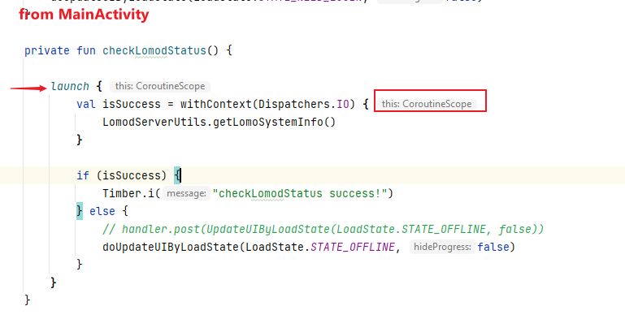

4. Network layer
RestFul API used below component:
com.squareup.retrofit2
It's pretty easily to create the interface and build the instance like:
val retrofit = Retrofit.Builder()
.baseUrl(inPutBaseUrl.trim())
.addConverterFactory(ScalarsConverterFactory.create())
//.addConverterFactory(MoshiConverterFactory.create())
.addConverterFactory(MoshiConverterFactory.create(getMoshi()))
// The call adapter handles threads
.addCallAdapterFactory(CoroutineCallAdapterFactory())
.callbackExecutor(mExecutorService)
.client(client)
.build()
return retrofit.create(LomoService::class.java)
And the LomoService is an interface class like below:
interface LomoService {
@Headers("Accept: text/plain")
@GET("system")
fun getSystemInfo(): Deferred<Response<String>>
}
Then, in the Logic layer, call flow as below
suspend fun getLomoSystemInfo() : Boolean {
try {
val webResp = LomoApi.getInst().getSystemInfo().await()
if (webResp.isSuccessful) {
Timber.i("lomod: ${webResp.body()}")
return true
} else {
Timber.e("getLomoSystemInfo: connected failed!")
return false
}
} catch (e: Exception) {
Timber.e("getLomoSystemInfo exception, ${e.message}")
return false
}
}
Last in the UI layer, the call flow just like below code picture:
|  |